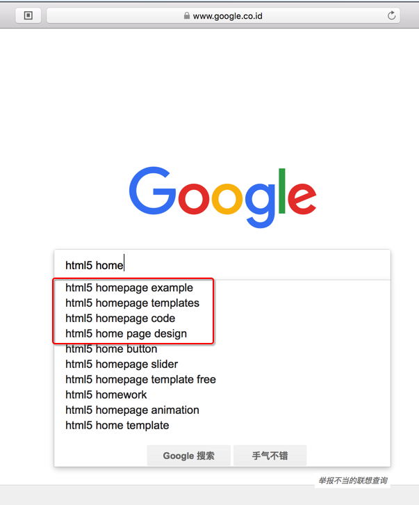
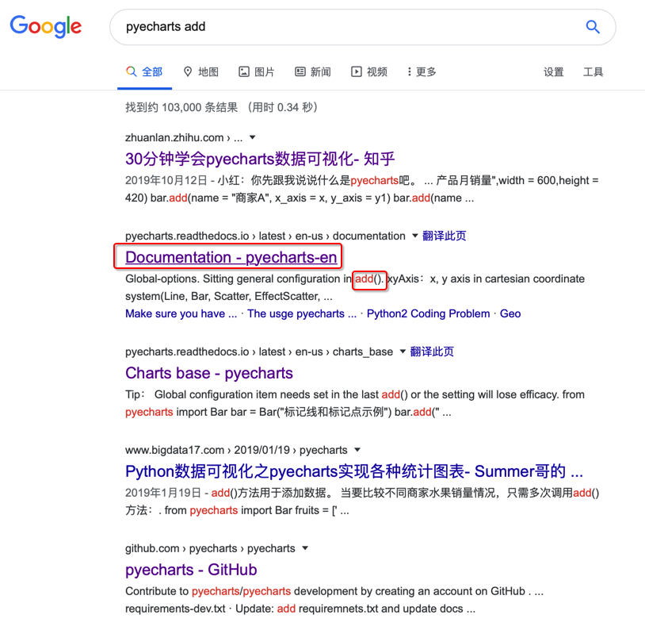
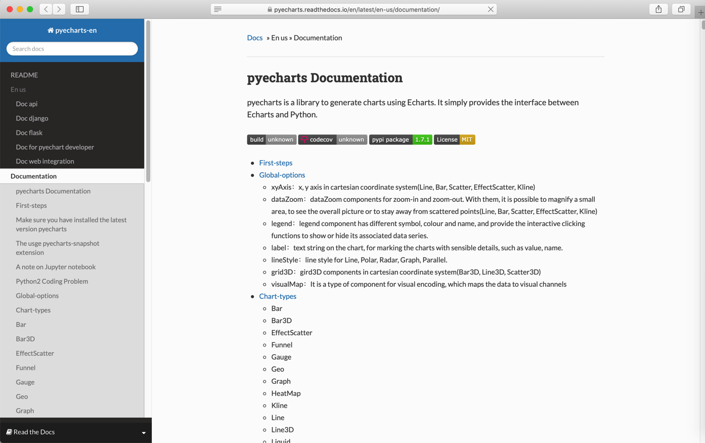
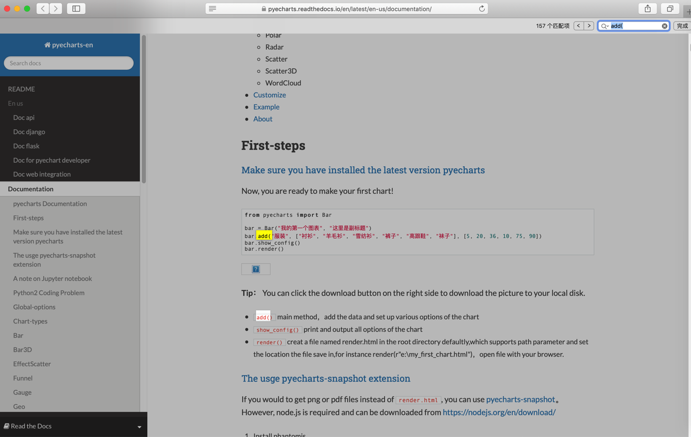
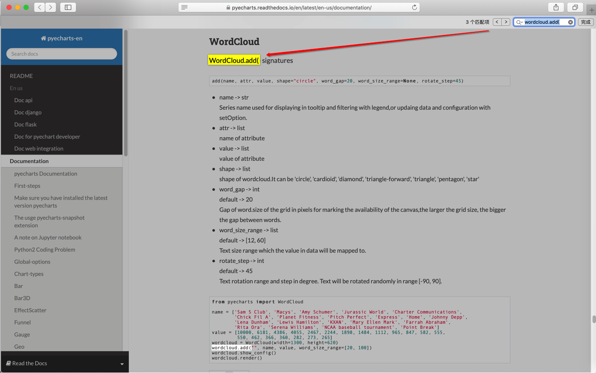
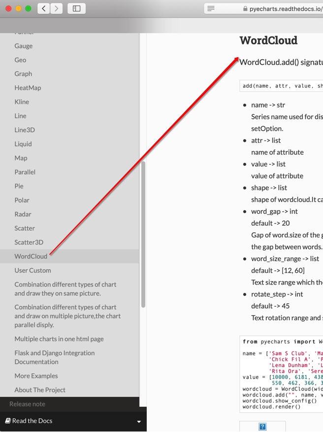

如何利用google搜索
用google搜索到你要的资料
核心要点是：搞清楚要搜索的关键字
如何知道要搜索什么呢？
需要较好的抽象思维和抓住问题要点，最终找到 问题核心关键词
下面就以举例方式来解释：
如何从问题入手，找到自己要搜的关键词
举例：html5的主页
比如：
【已解决】用什么技术实现公司官网首页H5页面
期间，对于想要用html5实现普通公司的主页，涉及到哪些技术和方法
但是除了知道应该搜索html5之外，不知道google中应该搜索什么关键词才比较合适。
然后此处就正好利用了google的动态匹配，达到了自己的目的
才刚搜了
html5 home
之后，google就动态匹配的列出来，我希望查询的关键字，尤其是列表开始的几个：
- html5 homepage example
- html5 homepage templates
- html5 homepage code
- html5 homepage design

然后接着就可以分别去搜这些关键字，从而最终找到自己想要找的内容了
比如搜：
html5 homepage design
找到相关的技术内容：
举例：pyecharts的wordcloud的add的函数定义
比如在回答
关于Python pyecharts 的问题（已经找资料找了半天了）-CSDN论坛
的问题期间，对于别人代码：
wordcloud.add("",name,values,word_size_range=[20,100],shape= "circle")
需要去找到wordcloud.add的函数的定义
此处已知是Python的pyecharts的库
所以去搜：
pyecharts add
或：
python pyecharts add
找到：

可见，第二个，一眼就能看出是官网资料
因为其网址是：
pyecharts.readthedocs.io › latest › en-us › documentation
这种地址
而（你需要具有，或逐渐熟悉）已知知识：
readthedocs.io是个存放Python的库的官网文档的一个网站
-》从而就能确定：这个资料，肯定是官网资料（之一）了。
进入后是：

然后尝试在页面中直接搜：
add(
也的确会找到，很多个add()

但好像不是我们要的那个add函数的定义
-》至此，也还是不能一下子找到我们要的add函数的定义
但是能注意到：好像是pyecharts中，具体还分很多个功能模块
因为原问题中指的是wordcloud
然后此处就去搜索
wordcloud.add(
注：万一还有 其他xxxcloud.add，那么也可以去搜： cloud.add(，多找找看，也是可以找到此处的wordcloud.add( 的。
即可找到我们要的：

看到函数定义 WordCloud.add() signatures 是：
add(name, attr, value, shape="circle", word_gap=20, word_size_range=None, rotate_step=45)
至此，完成目标任务：
找到此处pyecharts的(wordcloud的)add函数的定义
-》从而搞清楚：每个参数含义，以及如何传递参数
另外也注意到，左边的目录中有这个WordCloud

-》验证了之前的判断：pyecharts中有多个模块，wordcloud只是其中一个模块的推断。
Google高级用法
关于google搜索技巧，想说的是：自己这么多年利用Google找资料，其实很少用到高级用法。
毕竟核心在于前面提到的，把你遇到的问题，提炼出准确的关键词，然后即可快速找到你要的内容。
当然，懂更多的搜索技巧，肯定是好事，能灵活运用，才能锦上添花。
下面总结一些Google高级的搜索技巧，供参考：
- 想要精确匹配，则用引号
- "你要搜索的内容"
- 不想要搜索结果包含某些东西，用：减号
-- "你要搜索的内容" - "要排除的内容"
- 使用通配符
- 星号
*- 举例：
"the most * examples of censorship"- 结果包含：
"the most outrageous examples of censorship""the most dangerous examples of censorship""the most prolific examples of censorship"- 等等
- 结果包含：
- 举例：
- 波浪号
~- 举例：
the importance of ~censorship- 等价于搜索：
the importance of censorship- 同时搜索censorship的相关词汇，比如：propaganda：
the importance of propaganda
- 等价于搜索：
- 举例：
- 星号
- 站内搜索=指定只搜索某个网站：用
site:- 举例：
the purpose of education site:http://www.time.com/- 只搜索网站
http://www.time.com/中的the purpose of education
- 只搜索网站
- 举例：